리테일·커머스 도메인에서 수요예측, 가격·재고 최적화, 고객 세그멘테이션·개인화 추천 등 다양한 비즈니스 문제를 통계·머신러닝 모델링으로 풀어왔습니다. 최근에는 AI가 상품을 이해하고 추천하게 만드는 문제를 가장 깊게 파고 있습니다 — Taxonomy 설계, LLM·RAG 기반 AI Agent 개발, Prompt Engineering을 실무와 박사 연구 양쪽에서 수행하며 GenAI 기반 AI 서비스를 기획부터 구현까지 리드해 왔습니다.
개별 과제를 하나씩 수행한 것이 아니라, “AI가 상품과 고객을 이해하게 만든다”는 목표 아래 과제 순서와 연결 구조를 직접 설계하고 실행했습니다. 네 과제가 모두 AI Agent 본과제의 선행 조건으로 모이는 구조입니다.
상세 내용과 아키텍처는 이어지는 페이지에서 확인할 수 있습니다
| 기간 | 회사 | 조직 | 역할 |
|---|---|---|---|
| 2024.03 ~ 현재 | 롯데하이마트 | 데이터전략팀 | 매니저(책임) · 파트장 |
| 2023.08 ~ 2024.02 | 신세계아이앤씨 | 빅데이터기술팀 | Data Scientist |
| 2020.09 ~ 2023.08 | ㈜엑셈 | 빅데이터사업본부 분석팀 | 과장 · PM/PL (삼성물산 패션부문 파견) |
| 2016.06 ~ 2019.06 | ㈜브이패스 | DA팀 | 과장 |
| 2013.01 ~ 2015.12 | 한국개발연구원(KDI) | 경쟁정책연구부 | 연구원 |
| Programming | Python · R · SQL · Stata |
| Analytics / ML | Pandas · Scikit-learn · LightGBM · PyTorch · XGBoost · CatBoost · SHAP · Time Series · Regression · Econometrics · Cox Hazard Model |
| 추천 / 예측 | Recommendation · Demand Forecasting · Bass Diffusion · Similarity Modeling · Association Rule Mining |
| Optimization | Optimization · Transportation Algorithm · Change Point Analysis |
| LLM / Agent / Search | LangChain · LangGraph · RAG · Vector DB(FAISS) · GraphRAG(Neo4j) · Semantic Search · Reranking · Prompt Engineering · OCR · Gemma3 · vLLM · Multi-Agent 설계 · Taxonomy Design · FABEC Framework |
| Data / Service | Airflow · RStudio Server · REST API · FastAPI · Elasticsearch · Tableau · CDP · Database · Dashboard |
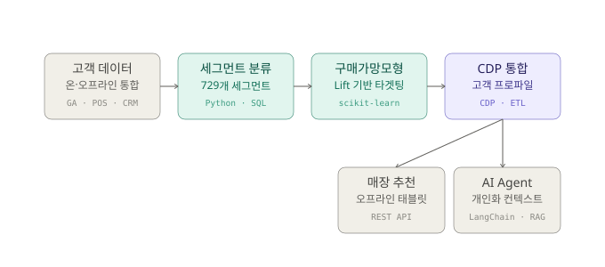
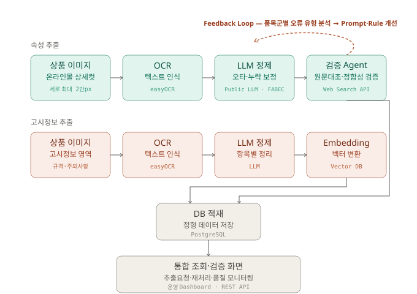
단순 기술 설명(Feature)을 고객 중심 가치로 전환하는 FAB 구조 문구를 자동생성했습니다.
{'Feature':'NEW 유산균김치+ 기능','Advantage':'유산균 함량 57배 증가','Benefit':'김치 맛과 품질 유지','Experience':'아삭하고 깊은 맛 경험','Context':'오래 보관해도 신선함'}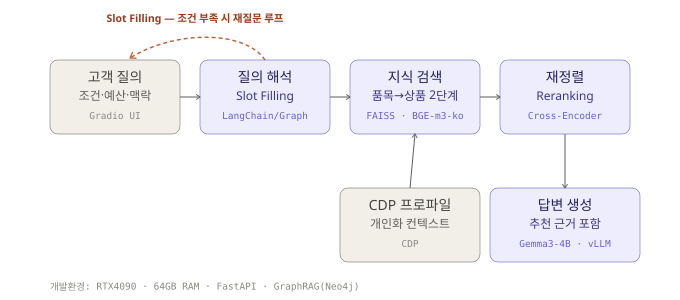
| 문제 | 상세 |
|---|---|
| 라벨 부족 | 전체 수백만 건 가운데 라벨링 비용 제약으로 약 2만 건만 수작업 라벨 확보 |
| 미라벨 유형 다수 | 105개 문의유형 중 약 30개는 정답 데이터가 전무 |
| 극단적 불균형 | 상위 10개 유형(상품문의 등)이 80% 이상을 차지, 실운영 예측 결과도 30~40개 유형에 집중 |
필요한 정보는 이미 상품 상세페이지 안에 있었습니다. 제조사가 만든 상세 이미지에는 그 상품의 핵심 소구점이 모두 담겨 있지만, 세로 2만 픽셀에 달하는 분량이라 사람이 읽어내기 어려울 뿐이었습니다.
| 요소 | 내용 | 예시 |
|---|---|---|
| Feature | 객관적 특징 | LG 4도어 냉장고, 870L 대용량 |
| Advantage | 기능적 장점 | 넉넉한 용량으로 대가족도 충분히 사용 |
| Benefit | 고객 관점 편익 | 주말에 대량으로 장을 봐도 여유롭게 보관 |
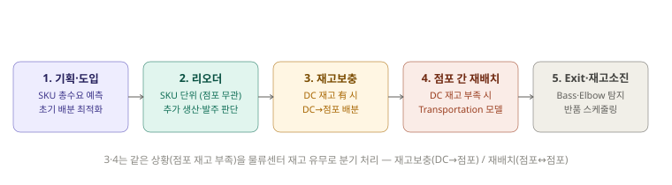
| 단계 | 핵심 입력 | 분석·모델 | 핵심 제약 |
|---|---|---|---|
| 상품 기획 | 상품 속성, 유사상품 판매 | SKU 총수요 예측 | 생산·도입 가능량 |
| 초도 배분 | 점포·SKU 초기수요 | 초기수요 예측·배분 로직 | 배분량 합계 ≤ 총생산량 |
| 리오더 (SKU) | SKU 전체 판매·총재고 | SKU 단위 수요예측 | 리드타임, 총가용재고 |
| 재고보충 | 물류센터 재고, 점포별 부족분 | 보충 우선순위 로직 | 물류센터 재고 有 |
| 점포 재배치 | 점포별 미래 과부족 재고 | Transportation 모델 | 물류센터 재고 부족 시 |
| Exit·반품 | 주차별 판매·재고 | Bass·Elbow Point | 센터별 주차 처리 가능량 |
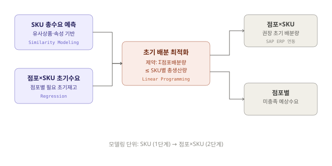
모델링 단위: SKU
처리 절차 — 예측 대상 상품·운영기간 정의 → 유사 상품·속성 기반 학습 데이터 구성 → SKU별 예상 총판매량·시즌 누적수요 예측 → 실제 생산·도입 계획과 비교 → 과잉 생산·기회손실 가능성 점검.
산출물: SKU별 예상 총판매량·시즌 누적수요, 생산·도입 수량 검토 기준, 수요 대비 생산량 과부족 분석, 상품별 수요 위험도
모델링 단위: 점포 × SKU
업무 배경 — 상품별 총생산량·총도입량이 사전에 정해져 있어 모든 점포의 필요 수량을 충족하기 어려운 상황에서, 제한된 가용 물량을 점포별 예상수요에 맞게 배분해야 합니다.
산출물: 점포·SKU별 예상 초기수요·권장 배분량, SKU별 총생산량 대비 배분 결과, 점포별 미충족 예상수요, 배분 전후 기대 판매량 비교
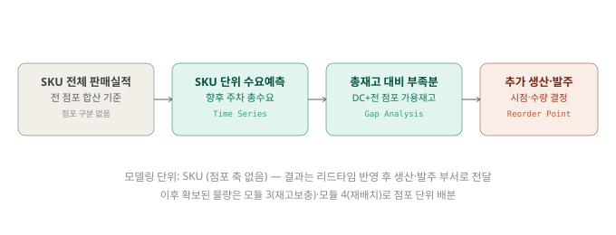
모델링 단위: SKU (점포 축 없음)
산출물: SKU별 향후 주차 예상 총수요, 누적 수요 전망
산출물: SKU별 리오더 필요 여부, 권장 발주 시점·수량, 리오더 후 SKU 총재고 시뮬레이션
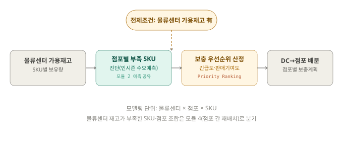
SKU별 물류센터 보유 재고를 확인합니다. 이 모듈은 물류센터에 해당 SKU 재고가 남아있는 상황을 전제로 하며, 재고가 없는 SKU·점포 조합은 모듈 4(점포 간 재배치)로 넘어갑니다.
모듈 2·리오더 모듈과 별개로, 점포·SKU·주차 단위 인시즌 수요예측 결과(모듈 4와 공유)를 활용해 점포별 미래 재고를 전망하고 결품이 예상되는 점포·SKU를 진단합니다.
물류센터 재고가 모든 점포의 부족분을 동시에 채우기에 부족할 수 있어, 결품 긴급도와 점포별 판매 기여도를 기준으로 보충 우선순위를 매기고 물류센터 재고를 점포별로 배분합니다.
산출물: 점포·SKU별 보충 필요 수량, 물류센터 재고 대비 보충 우선순위, 점포별 최종 보충 배분계획
※ 점포 규모·상권·진열 가능 수량 조건은 별도 제약으로 반영하지 않았으며, 점포·SKU별 수요예측과 미래 과부족 재고량, 점포 간 이동 구조를 중심으로 설계했습니다.
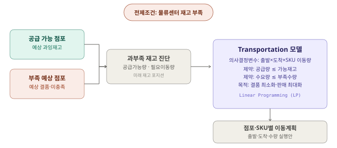
모듈 3과 공유하는 점포·SKU·주차 단위 인시즌 수요예측 결과를 활용해 점포별 미래 재고 포지션을 계산합니다.
산출물: 점포·SKU별 과잉·부족 재고량, 공급 가능 점포·수요 점포 목록, SKU별 총이동 가능 물량
모델링 단위: 출발 점포 × 도착 점포 × SKU
의사결정변수 — 출발 점포 i에서 도착 점포 j로 SKU k를 몇 개 이동할 것인가.
목적함수 — 점포별 미충족 수요·예상 결품 수량 최소화, 재배치를 통한 기대 판매량 최대화, 필요 시 이동량·이동비용 최소화를 중심으로 설계.
산출물: 출발·도착 점포와 이동 대상 SKU·권장 이동량, 이동 전후 예상재고·결품량, 재배치를 통한 추가 판매 가능량
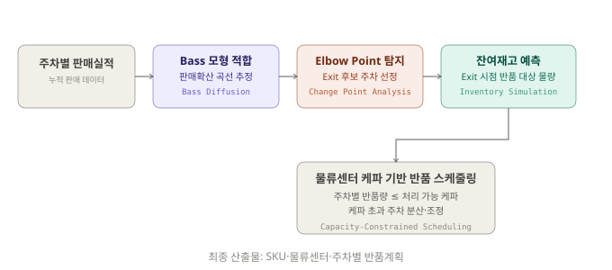
상품별 주차 판매량과 누적 판매량 데이터에 Bass 모형을 적합해 미래 주차별 판매량과 누적 판매곡선을 추정하고, 판매 증가·성숙·둔화 구간을 식별합니다.
산출물: 상품별 Bass 모형 적합 결과, 주차별 예상 판매량·누적 판매곡선, 판매 단계 패턴
Bass 모형으로 추정한 판매곡선에서 추가 운영에 따른 판매효과가 뚜렷하게 둔화되는 변곡 구간(Elbow Point)을 찾아 상품별 Exit 후보 시점으로 활용하고, 현업 운영 기준과 비교합니다.
산출물: SKU별 Elbow Point·Exit 후보 주차, 주차별 Exit 예상 대상 상품 목록
Bass 모형의 주차별 예상 판매량과 현재 재고·향후 입고량을 반영해, 현재 주차부터 Exit 후보 주차까지 주차별 예상재고를 계산합니다.
산출물: SKU별 주차별 예상재고, Exit 시점 예상 잔여재고, 상품별 예상 반품 대상 물량
스케줄링 단위: SKU × 물류센터 × 반품 주차
업무 배경 — 다수 상품의 Exit가 유사한 시점에 집중되면 물류센터로의 반품 물량이 특정 주차에 몰려 처리 가능 용량을 초과할 수 있습니다. 상품별 Exit 시점·잔여재고 예측 결과를 물류센터의 주차별 처리 케파와 연결해 반품 일정을 분산합니다.
산출물: SKU별 권장 Exit 시점, 물류센터별 주차 처리 가능량, 케파 초과 예상 주차, SKU·물류센터·주차별 최종 반품계획
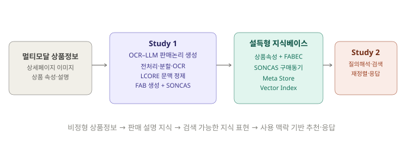
| 구분 | Study 1 | Study 2 |
|---|---|---|
| 연구명 | OCR-LLM 기반 판매논리 자동 생성 | 설득형 지식 기반 상품 추천 AI 에이전트 |
| 핵심 입력 | 상품 상세페이지 이미지 | 상품 속성 및 설득형 지식베이스 |
| 핵심 처리 | 전처리·분할·OCR·문맥 정제·FAB 생성 | 질의 해석·시맨틱 검색·재정렬·응답 생성 |
| 지식 구조 | Feature, Advantage, Benefit, SONCAS | FABEC, SONCAS, 기본 메타데이터 |
| 검증 방식 | CER, 판매논리·구매동기 평가, 전문가 검토 | Hit@5, MRR@10, NDCG@10 |
| 실험 데이터 | 가전 5개 품목 | 자체 노트북 데이터 + Amazon ESCI |
2개 모듈·4개 서브모듈로 구성된 자동화 파이프라인.
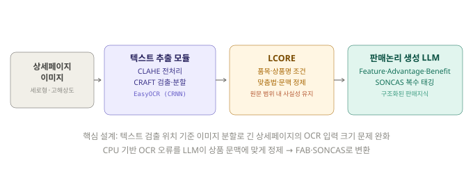
LCORE(LLM-based Contextual OCR Refinement)는 OCR 결과를 상품의 품목·상품명·문맥 기준으로 정제하는 단계입니다.
| 요소 | 의미 | 예시 |
|---|---|---|
| Feature | 객관적 특징 | 약 1.97kg의 가벼운 무게 |
| Advantage | 기능적 장점 | 손목 부담을 줄이고 편하게 청소 가능 |
| Benefit | 소비자 관점 최종 혜택 | 청소 피로 감소와 일상 편의 향상 |
각 판매논리에 SONCAS(Security 안전성·Vanity 허영심·Novelty 새로움·Comfort 편안함·Money 경제성·Likeability 호감도) 구매동기를 복수 태깅합니다.
롯데하이마트 온라인몰의 가전 5개 품목(TV·냉장고·청소기·에어컨·전기밥솥) 상세페이지 이미지로 OCR 정답 데이터를 수작업 전사해 구축.
| 방식 | 평균 CER | 원본 대비 감소 |
|---|---|---|
| 원본 OCR | 0.3347 | – |
| CLAHE | 0.3103 | 7.3% |
| LCORE | 0.2761 | 17.5% |
| 지표 | 결과 |
|---|---|
| 총 판매논리 수 | 65개 |
| 총 구매동기 태그 수 | 127개 |
| 문장당 평균 구매동기 수 | 1.95개 |
| 구매동기 항목 평균 포괄률 | 86.64% |
가전유통 실무 경력 15년·3년 전문가 2인의 검토를 통해 실무 사용 가능성 확인.
Study 2는 Study 1의 FAB를 확장한 FABEC(Feature·Advantage·Benefit·Experience·Context) 구조를 사용합니다. Experience(고객 경험)·Context(사용 맥락)가 Study 2에서 새로 확장되었습니다.
| 필드 | 의미 | 연구 단계 |
|---|---|---|
| product_attributes | 기존 상품 속성 | 기존 데이터 |
| feature / advantage / benefit | 특징 / 장점 / 혜택 | Study 1 |
| experience | 고객 경험 | Study 2 확장 |
| context | 사용 맥락 | Study 2 확장 |
| soncas_tags | 구매동기 태그 | Study 1 |
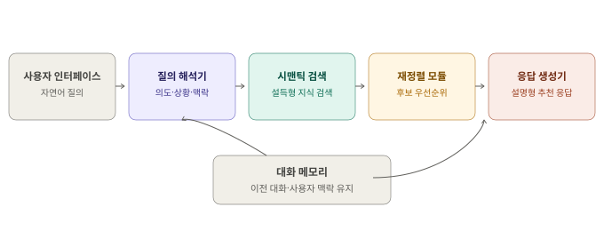
사용자 인터페이스 → 질의 해석기(의도·상황·맥락) → 시맨틱 검색(설득형 지식 검색) → 재정렬 모듈(후보 우선순위) → 응답 생성기(설명형 추천 응답) 순서로 이어지며, 대화 메모리가 이전 대화·사용자 맥락을 유지합니다.
동일한 검색 파이프라인에서 문서 표현 방식만 바꿔 비교 — Baseline(상품 속성만) vs Proposed(상품 속성 + FABEC·구매동기). 목적은 정답 상품을 찾는지가 아니라 사용자 의도에 더 적합한 상품을 상위에 배치하는지 검증.
| 데이터 | 지표 | 속성 기반 | 설득형 지식 | 변화 |
|---|---|---|---|---|
| 하이마트 | Hit@5 | 0.9630 | 1.0000 | +0.0370 |
| 하이마트 | MRR@10 | 0.8776 | 0.8849 | +0.0073 |
| 하이마트 | NDCG@10 | 0.6855 | 0.7106 | +0.0251 |
| ESCI | Hit@5 | 0.7642 | 0.7967 | +0.0325 |
| ESCI | MRR@10 | 0.6328 | 0.6734 | +0.0406 |
| ESCI | NDCG@10 | 0.4007 | 0.4267 | +0.0260 |
| 질의 유형 | 속성 기반 NDCG@10 | 설득형 지식 NDCG@10 | 개선폭 |
|---|---|---|---|
| attribute | 0.7224 | 0.7419 | +0.0195 |
| benefit_use_case | 0.6301 | 0.6713 | +0.0412 |
| mixed | 0.7041 | 0.7185 | +0.0144 |
Study 1이 상품 정보를 소비자 관점의 설명 지식으로 변환하는 지식 생성 계층이라면, Study 2는 이 지식을 검색·추천·응답에 활용하는 서비스 계층입니다.
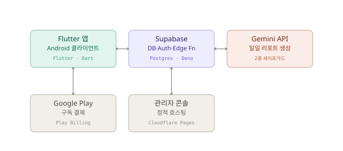
기본 아이디어 — 직수는 저울로 재기 전엔 정답을 알 수 없지만, 유축은 배출량을 실측할 수 있다는 점에서 출발. 좌·우 유방을 각각 "얼마나 차 있는가(충만도)"라는 0~1 사이의 상태로 표현하고, 이 상태가 시간에 따라 어떻게 줄고 차오르는지를 두 가지 함수 관계로 모델링.
Flutter-Supabase 구조, 좌/우 유방 상태 모델과 회복시간 상수 같은 도메인 로직은 데이터 스키마부터 직접 설계하고, AI에게는 이 설계를 구현하는 코드 생성을 맡겼습니다. "무엇을 만들지"와 "왜 그렇게 만드는지"는 항상 사람이 결정했습니다.
기능 단위로 자연어 요구사항을 작성해 AI가 초안 코드를 생성하면, 직접 실행해보고 동작·엣지케이스를 검증한 뒤 다음 반복으로 넘어가는 짧은 사이클을 반복했습니다. 특히 UI 컴포넌트, Edge Function 보일러플레이트, Supabase 스키마 마이그레이션처럼 반복적인 부분에서 개발 속도가 크게 빨라졌습니다.
AI가 짠 코드를 그대로 신뢰하지 않고, 직수량 추정 로직처럼 정답이 없는 계산은 직접 케이스를 만들어 결과를 검산했습니다. Gemini 기반 육아 리포트에도 부적절하거나 위험할 수 있는 조언이 노출되지 않도록 클라이언트·서버 양쪽에 세이프가드를 별도로 설계해 넣었습니다.
AI에게 바로 구현을 맡기지 않고, Andrej Karpathy·Matt Pocock류의 바이브코딩 워크플로우를 참고해 "무엇을 왜 만드는지"를 먼저 텍스트로 굳히는 단계를 거쳤습니다. 아이디어를 던지면 AI가 허점과 전제를 되물어 정리시키는 grill-me 단계 → 그렇게 다듬어진 내용을 실행 가능한 이슈 단위로 쪼개는 to_issue 단계 → 이슈를 다시 배경·요구사항·수용기준을 갖춘 PRD로 정리하는 to_prd 단계를 거쳐야 코드 생성으로 넘어가도록 워크플로우를 잡았습니다.
이 단계를 거치면 AI가 애매한 요구를 임의로 해석해 엉뚱한 코드를 만드는 일이 줄고, 직수량 추정 모델처럼 사양이 복잡한 기능에서도 구현 전에 로직의 허점을 먼저 걸러낼 수 있었습니다.